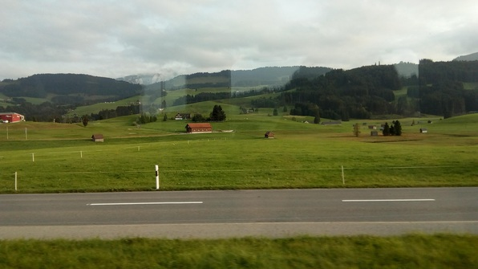

Go look at the pics!!
I’m relying on the pictures in the image gallery to tell my story! I’ll give a quick summary though!
Friiiiday
Friday was a scavenger hunt! Got together with the usual lunch crew from my language class and we trekked across the city questing for answers: What were the colors of the five stained glass windows at the Fraumunster abbey? What was the form of the hole in the famous, nonexistent cube sculpture:
Pretty entertaining! After the hunt we left immediately (me, Daniel, Cody and Suraj) from the Zurich HB; we took the train to Gossau and then to Wasserauen. It was a good time:
Open container laws are not a thing here! We passed through some beautiful country:

We arrived at Wasserauen and hiked up some very steep trails/roads to the Berggasthaus there:
Then a delicious meal!! The shpetzli was really good.

Crashed; the next morning at 8 had breakfast, then set out for the Saentis, a spire nearly a mile above us. Set out at an absolutely breakneck pace–poor Suraj couldn’t keep up with us hiking-maniac CS folks.
Hike
The hike up was exhausting and beautiful. At a certain point, it stopped feeling like Galbraith in Bellingham, and started feeling windswept and cold and majestic.

Then it started raining. We got coffee at a berggasthaus, then set out for the most intense part of the hike. We were holding onto cables, staring out into oblivion in fog:
and then it started really raining, so we turned around. We looped down the mountain, picked up some of our stuff at the haus where we’d stayed, and hopped the train back to Zurich! This involved missing a train by 30 seconds fiddling with tickets, freezing our sodden butts off, and lots of bread and salami.
Back in Zurich, we all took warm showers. I went downstairs to read through some Haskell, ended up hanging out with a physics PhD whose name I forgot :)
Paaaaasta! #Hitalia
Then Daniel and I went over to Cody’s place, 30 minutes by transit, and made dinner. We heated Daniel’s amazing sauce and I made garlic bread; we topped off the whole thing with beer and Swiss chocolate. Sehr sehr gut!
Daniel and I went back to Culmann; I went back to reading and then got into a conversation with the two Romanian girls Deo and Adina. Fun conversation; they had some really really miserable professors :P
After that it was very late and I did some laundry and wrote this log :) Gute nacht zuesammen!